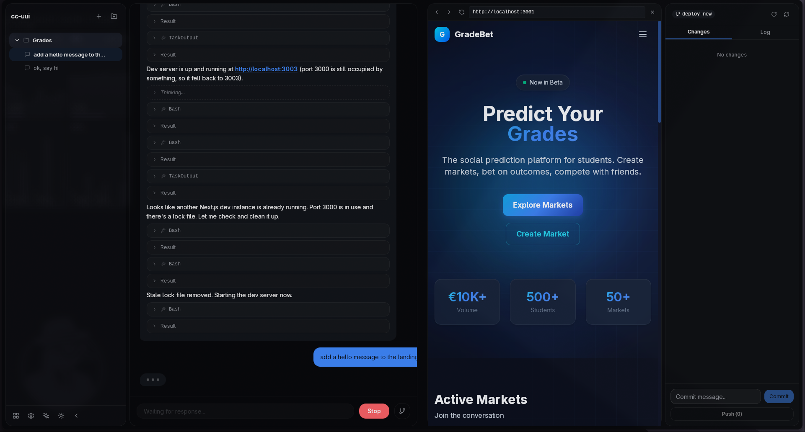

cc-ui brings Claude's intelligence directly into your desktop workflow. Chat, code, commit, and deploy — all in one powerful interface.

From understanding codebases to shipping features, cc-ui keeps you in flow.
Real-time conversations with Claude that understand your codebase context. Stream responses, review diffs, and iterate instantly.
Stage, commit, diff, and push without leaving the app. Visual diffs with color-coded changes and stash management built in.
Switch between projects seamlessly. Each project maintains its own sessions, context, and conversation history.
Extend functionality with slash commands. Install community skills or build your own to supercharge your workflow.
One click to generate perfect commit messages. AI analyzes your staged diff and writes conventional commits instantly.
List, create, and open pull requests directly from the git panel. Full GitHub integration via the gh CLI.
No more context switching between terminal, browser, and editor. Everything lives in one window.
Open a session and tell Claude what you want to build, fix, or understand. Use natural language — no special syntax needed.
Claude reads your codebase, proposes changes with inline diffs, and explains the reasoning. Approve, iterate, or ask for alternatives.
Stage changes, generate commit messages with AI, manage stashes, create pull requests, and push — all from within cc-ui.
Built on open standards. Works with the tools you already use.
Powered by Anthropic's Claude models
Stage, stash, diff, commit & push
Create PRs & manage issues via gh CLI
Your code never leaves your machine
Extend with community plugins
Download cc-ui for free and experience AI-powered development on your desktop.
No account required. No telemetry. Your API key, your data.